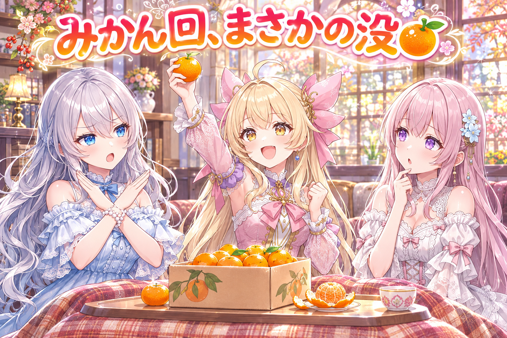
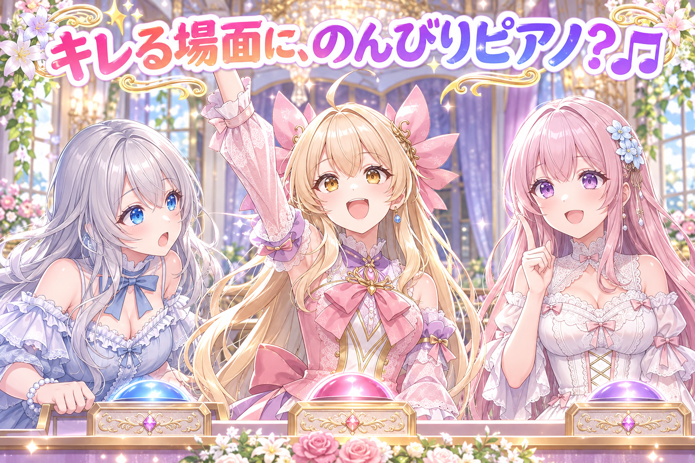
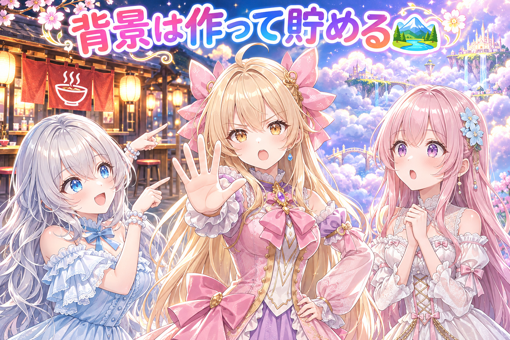
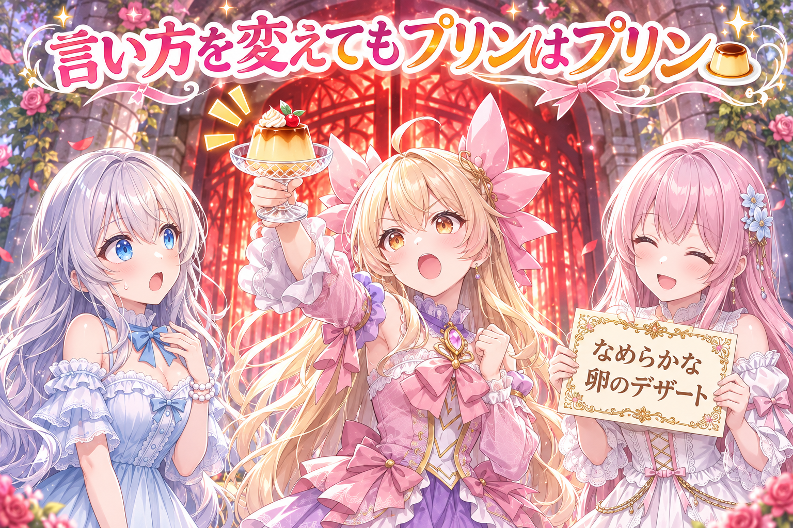
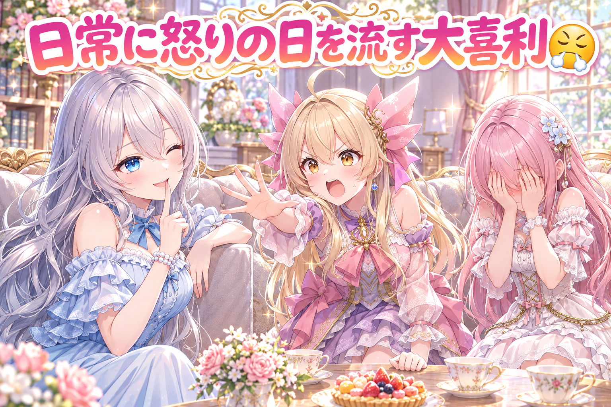

📌 3行まとめ
- パチンコ・パチスロ回の試作『こたつのみかん回』が無理やりすぎて没。パチ回は実際に打つ回だけにし、モノマネ回・パロディ回も作りの決まりを本格的に作り直した
- 動画のBGMが日常曲ばかりだったので、場面の曲を30曲あまり追加。ブチ切れや茶番の場面には短いスポット曲を、印象的なフレーズから鳴らすようにした
- 合う背景が無いときは自動で作って次回から使えるようにし、お題が過去とかぶらないよう似ている度合いまで見る門を作った
1. 👀 今日のやらかし

三姉妹の会話アニメには「パロディ」「モノマネ」「パチンコスロット」という3つのジャンル回があります。今日はその試作を見直したところ、パチンコスロット回の『こたつのみかん箱を前に、みかんをパチスロの設定判別に見立てる』というお話が、どう見ても無理やりな組み合わせで意味が通らない、という結論になりました。そこでこの回は没にして、パチンコスロット回は実際にホールや家の実機で打つ回だけにすると決めました。打つ場所もホールでの実戦と家スロを交互にして、毎回同じ景色にならないようにしています。
あわせてモノマネ回も、途中からほとんど素の会話に戻ってしまっていたので、各キャラが一つの役を最後までなりきる作りに直しました。パロディ回は、お話そのものを何かのパロディにした上で、小ネタを散りばめ、伏字やぼかしで「あ、あれか」とさりげなく分かる一言を添える形に整えています。
📝 ポイント（初心者向け解説・技術メモ・まとめ）
- 初心者向け解説：お料理で、カレーにいちごを入れたら『新しい！』より先に『なんで？』が来ちゃうよね。題材とジャンルの組み合わせも同じで、見立てが遠すぎると笑う前に置いていかれちゃうの🍓
- 技術メモ：ジャンルごとの台本ルールを具体化。パチ回は実戦の場面を必須にし、ホール実戦／家スロを交互に割り当て。モノマネ回は幕ごとに台詞の文字からなりきり度を数える門と、足りない幕を直す段を追加。パロディ回は話全体の元ネタ1つ＋小ネタ6〜12個＋伏字の補足台詞という構成を明文化
- ひとことまとめ：見立てが遠すぎるネタは、勇気を出して没にするのが正解
2. 🎵 BGMの模様替え：日常曲ばっかり問題

動画を見返すと、流れている曲のほとんどがほのぼの系・コミカル系の日常曲で、場面が盛り上がっても音が変わらない、同じ曲が何度も出てくる、という弱点がありました。そこで場面の曲を30曲あまり追加し、新しく『情景』と『茶番』の小分けも作りました。
さらに、ブチ切れやブーイング、ドタバタ茶番のような短い場面には、2ターンだけ差し込むスポット曲を使うように。スポット曲は曲の頭からではなく、よく聞く印象的なフレーズから鳴らし、終わったら元の曲の続きから戻ります。直前の3回で使った曲は避け、入場やお出かけのような『わくわく』のきっかけには、わくわく系の棚から選ぶようにしました（試作で入場シーンに『うっかり』っぽい曲が流れていたのがきっかけです）。
📝 ポイント（初心者向け解説・技術メモ・まとめ）
- 初心者向け解説：ずっと同じお洋服だと、どんなに可愛くても変化に気づいてもらえないよね。BGMも場面ごとに着替えると、お話のメリハリがぐっと伝わるの👗
- 技術メモ：曲ごとに mood・scenes・sub（小分け）・tags を持たせて場面の気持ちから選曲。スポット曲は2ターン限定で、サビの開始秒から再生し、明けたら元の曲を中断位置から再開。直前3回の使用曲は抽選から除外。CC BY の曲は credit を概要欄へ自動出力し、BY-SA や出どころ不明の曲は使用停止に
- ひとことまとめ：盛り上がる場面には、盛り上がる曲を一番いいところから
3. 🏞️ 合う背景がないなら、作って棚にしまう

お話の場面が変わっても背景が変わらない、そもそも合う背景が手持ちに無い、ということがよくありました。そこで、合う背景が見つからないときはその場で画像AIに作らせて登録し、次回からも使えるようにする段を足しました。台本を書くAIにも、新しい背景の頼み方を教えています。
文字が入る看板のような背景や、繊細できれいに見せたい背景は、文字を正確に描くのが得意な画像AIで作る決まりに。試しに夜のラーメン屋さんと、雲の浮かぶ夢の空間を本番の流れで作って、背景の棚に登録しました。あわせて、場面の切り替わりで背景とスポット曲がそろって変わるよう、自動でそろえる段と『ちゃんと変化しているか』を見る門も入っています。
📝 ポイント（初心者向け解説・技術メモ・まとめ）
- 初心者向け解説：お芝居の舞台セットを毎回一から作るのは大変だけど、一度作ったセットを倉庫にしまっておけば、次からはさっと出せるよね。背景も同じで、作ったらちゃんと棚にしまうのがコツ🎪
- 技術メモ：手持ちに合う背景が無い場合に生成→登録する段（bg_autogen）を追加。文字入り・繊細な背景は bg_text の文字だけを正確に描かせる方針で、文字に強い画像生成モデルを使用。目録は追記のみで既存の書式は変更しない。背景切り替えとスポット曲を同期させ、変化量が足りない台本を止める門を設置
- ひとことまとめ：無いなら作る、作ったらしまう、しまったら使い回す
4. 🍮 ネタかぶり防止の門

毎日お話を作っていると、どうしてもお題が似てきます。振り返ってみると、プリンが消える事件が2週間で2回、こたつが舞台の回が3回、漫画動画のタイトルが毎回同じ言い回し、という状態でした。今までのチェックは『文字が丸ごと同じか』しか見ていなかったので、言い方が違うだけの同じネタはすり抜けていたんです。
そこで、アニメ・漫画動画・漫画のお題をまとめて記録する共通のネタ台帳を作り、新しいお題は台帳と見比べて、言い回しの近さまで測るようにしました。似すぎていれば止め、少し似ていれば注意の印を付けます。お題は、この門を通った5案の中から選ぶ仕組みです。
📝 ポイント（初心者向け解説・技術メモ・まとめ）
- 初心者向け解説：毎日の日記で『今日もプリン食べた』が続くと、言葉を変えても同じ日に見えちゃうよね。ネタ帳を一冊にまとめて、似てないかを確かめるのが大事なの📒
- 技術メモ：アニメ・漫画動画・漫画のお題を共通台帳に記録。文字の一致に加え、日本語の小型文章埋め込みモデル ruri-v3-30m（sentence-transformers で実行）で意味の近さを測り、0.94以上で停止・0.90以上で警告。要素分けに失敗した候補も通さない。お題は門を通過した5案から選択
- ひとことまとめ：言い方を変えても、同じネタは同じネタ
5. 🎁 お楽しみコーナー：大喜利『こんな日常に怒りの日を流したい』

今日はスポット曲にちなんで大喜利です。お題は『普段の生活で、思わず怒りの日を流したくなる瞬間とは？』。三姉妹がそれぞれ答えます。
あなたが日常で怒りの日を流したくなるのは、どんな瞬間？ いちばん笑えた回答を、コメントでこっそり教えてね！
6. 💐 今日のまとめ
- 題材とジャンルの組み合わせが遠すぎる回は没にして、パチ回は実際に打つ回だけ・モノマネ回は最後までなりきる形に作り直した
- BGMは場面の曲を大きく増やし、盛り上がる場面には短いスポット曲を印象的なフレーズから鳴らすようにした
- 合う背景が無ければ作って棚に登録し、お題は似ている度合いまで見てかぶりを止めるようにした
みんなは、毎日何かを作るとき、ネタがかぶらないようにどんな工夫をしてる？
💬 コメント
お名前とコメントだけで送れるよ（承認されるとみんなに表示されます🌸）
コメントを読み込み中…